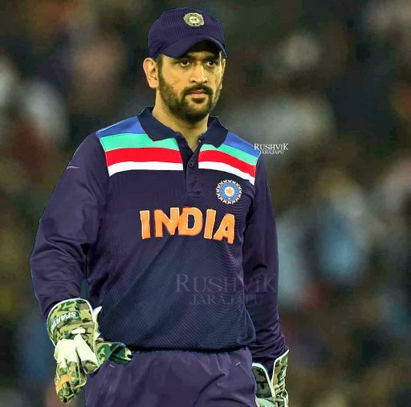

about me

asif Pathaan is a 2023 Indian Hindi-language action thriller film directed by Siddharth Anand and produced by Aditya Chopra of Yash Raj Films.[5] The fourth installment in the YRF Spy Universe, it stars Shah Rukh Khan, Deepika Padukone, and John Abraham, alongside Dimple Kapadia and Ashutosh Rana. Written by Shridhar Raghavan and Abbas Tyrewala from a story by Anand, the film is about Pathaan, an exiled RAW agent, who must work with ISI agent Rubina to take down Jim, a former RAW agent-turned-traitor, who is planning to spread a deadly lab-generated virus across India at the behest of a Pakistani military general.
danish Pathaan is a 2023 Indian Hindi-language action thriller film directed by Siddharth Anand and produced by Aditya Chopra of Yash Raj Films.[5] The fourth installment in the YRF Spy Universe, it stars Shah Rukh Khan, Deepika Padukone, and John Abraham, alongside Dimple Kapadia and Ashutosh Rana. Written by Shridhar Raghavan and Abbas Tyrewala from a story by Anand, the film is about Pathaan, an exiled RAW agent, who must work with ISI agent Rubina to take down Jim, a former RAW agent-turned-traitor, who is planning to spread a deadly lab-generated virus across India at the behest of a Pakistani military general.

sarfen Pathaan is a 2023 Indian Hindi-language action thriller film directed by Siddharth Anand and produced by Aditya Chopra of Yash Raj Films.[5] The fourth installment in the YRF Spy Universe, it stars Shah Rukh Khan, Deepika Padukone, and John Abraham, alongside Dimple Kapadia and Ashutosh Rana. Written by Shridhar Raghavan and Abbas Tyrewala from a story by Anand, the film is about Pathaan, an exiled RAW agent, who must work with ISI agent Rubina to take down Jim, a former RAW agent-turned-traitor, who is planning to spread a deadly lab-generated virus across India at the behest of a Pakistani military general.

tetiya Pathaan is a 2023 Indian Hindi-language action thriller film directed by Siddharth Anand and produced by Aditya Chopra of Yash Raj Films.[5] The fourth installment in the YRF Spy Universe, it stars Shah Rukh Khan, Deepika Padukone, and John Abraham, alongside Dimple Kapadia and Ashutosh Rana. Written by Shridhar Raghavan and Abbas Tyrewala from a story by Anand, the film is about Pathaan, an exiled RAW agent, who must work with ISI agent Rubina to take down Jim, a former RAW agent-turned-traitor, who is planning to spread a deadly lab-generated virus across India at the behest of a Pakistani military general.